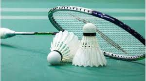
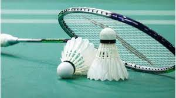
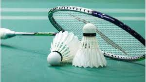

I study in podar international school in kalyan(west)
My hobbies
Hello my name is samarth. And I have a lot of hobbies and I want to share my hobbies with you.First, I love playing tennis and I am not that good at it but I like to play it. Second,I love to play badminton I think it is a fun game to play I have been playing it from about 1 year and it is a very fun to play.Third, I love drawing because I can do anything I am able to express a lot of thoughts.Fourth,cycling I love to do cycling because from the time I got my first cycle I am still addicted to cycling I nowdays I travel to far places with my cycle the longest I have ever traveled it about 19 km.

My favorite food
I am a person who like to eat many food items. and I get to taste many food item because my mother makes many food items. I love many things to eat but few are my favorite like nan and paneer butter masala, my moms hand made roti pizza and its base is not made of maida so it doen not contains fats and you call also call it as a mohe made thin crust pizza. I also love pav bhaji I love the cheese pasta that my sister makes and I like many more things.
Paneer tikka masala with nan
and Pav bhaji
Dream to become
It all started when I saw a movie called as missian mangal in that movie I was facinated
by space from that time I wanted to become a rocket engineer do coding but after a one year my that dream was gone but I wanted to continued on coding that is why I wanted to become a software engineer and to help me become one I took the clases of whitehat jr which helps me in learing coding and teach me to make different apps and websites (it is my dream)
.jpg)
 
